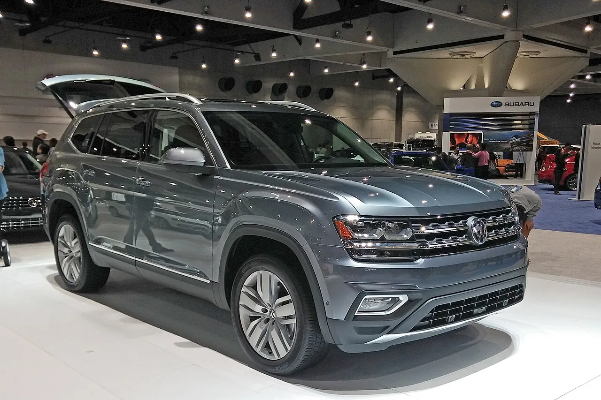
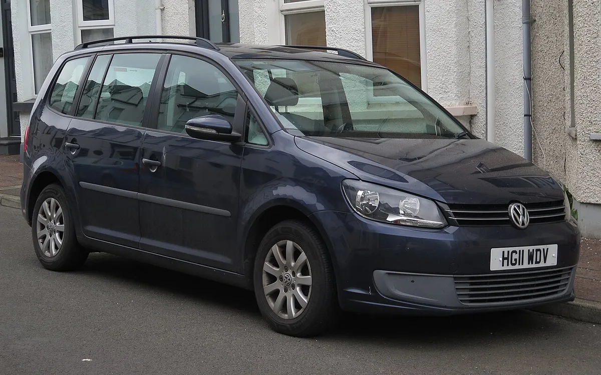
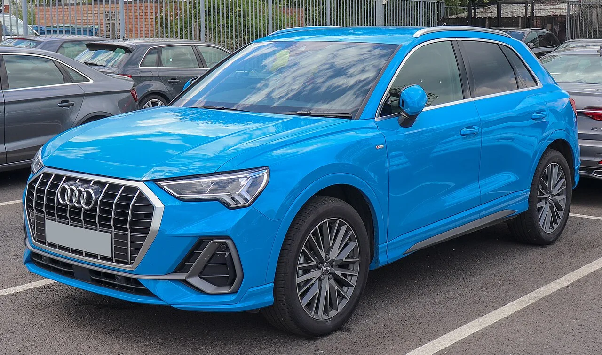
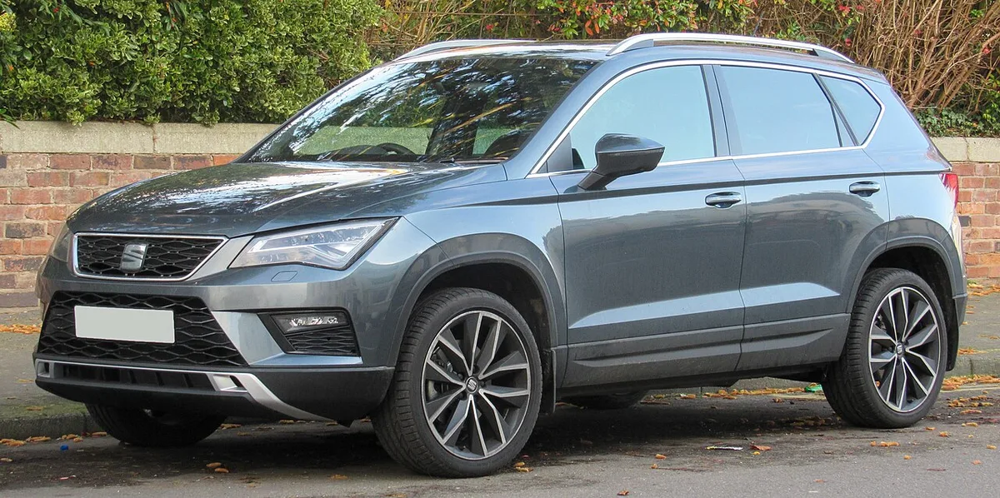

▲ 폭스바겐 티구안. 스티어링 랙 볼트 결함으로 2018년형이 미국 리콜 대상에 포함됐다 ⓒ Vauxford, Wikimedia Commons (CC BY-SA 4.0)
"디젤게이트 이후 최대 규모"가 될 수 있다는 관측이 나왔다. 폭스바겐그룹이 스티어링 랙(조향 기어박스)을 차체에 고정하는 볼트 하나 때문에 전 세계에서 최대 400만 대 안팎의 리콜에 직면했다는 보도다. 오토헤럴드는 29일 독일 경제지 한델스블라트 보도를 인용해 이같이 전했고, 독일 매체 아우토 모토르 운트 슈포르트도 "디젤게이트 이후 최대 리콜"이라는 표현을 썼다.
이 가운데 미국 도로교통안전국(NHTSA)에 접수된 리콜만 약 20만 대다. 문제의 볼트가 부식돼 부러지면 조향 성능이 떨어지거나 심하면 조향 기능을 잃을 수 있다는 것이 리콜 사유다.
1. 무슨 일이 벌어졌나 — 미국 20만 대에서 시작된 리콜
발단은 폭스바겐그룹 미국법인이 NHTSA에 제출한 리콜 보고서다. 대상은 2018~2019년형 폭스바겐 아틀라스, 2018년형 티구안, 2019~2021년형 아우디 Q3다. 미국 매체 보도 기준 모델별 대수는 아틀라스 8만 2,601대, 티구안 8만 5,713대, Q3 4만 410대로 합계 20만 8,724대다. 오토헤럴드와 일부 매체는 이를 20만 8,274대로 적었는데, 모델별 수치를 더하면 20만 8,724대가 되므로 후자가 오기일 가능성이 크다.

▲ 폭스바겐 아틀라스. 미국 리콜 대상에는 2018~2019년형이 포함됐다 ⓒ Wikimedia Commons (CC BY-SA 3.0)
눈길을 끄는 것은 리콜 시점이다. CarBuzz는 폭스바겐이 2024년 말 북미 밖에서 볼트 파손 사례를 처음 확인했고, 2025년 말까지 접수된 현장 보고는 3건에 불과했으며 모두 북미 밖에서 발생했다고 전했다. 폭스바겐과 아우디는 NHTSA에 북미에서 이 문제로 인한 충돌·화재·부상·보증 청구를 파악하지 못했다고 밝혔다.
2. 왜 '볼트 하나'가 조향을 잃게 하나
스티어링 랙은 운전대의 회전을 바퀴 방향 전환으로 바꿔 주는 핵심 장치다. 이 장치가 차체 앞쪽 서브프레임에 볼트로 단단히 고정돼 있어야 운전자의 조작이 바퀴에 정확히 전달된다. 이번 문제는 그중 오른쪽 장착 볼트 주변에 수분이 고이면서 부식이 진행되는 것이다.
📍 NHTSA가 설명한 위험 시나리오
미국 코리아데일리 보도에 따르면 NHTSA는 볼트 주변에 습기가 쌓이고 도로 염분에 오래 노출되면 열화가 빨라질 수 있다고 설명했다. 부식이 심해지면 볼트 머리가 부러지고, 랙의 고정력이 떨어져 특히 주차나 저속 선회처럼 큰 조향력이 필요한 상황에서 핸들이 무거워지는 등 조향 성능에 영향을 줄 수 있다.
오토헤럴드는 이 같은 문제가 겨울철 제설을 위해 염화물 계열 제설제를 뿌리는 지역에서 특히 나타나기 쉽다고 전했다. 즉 결함 자체는 설계·재질의 문제지만, 실제 증상은 차량이 운행된 환경에 좌우된다는 얘기다.
▲ 폭스바겐 티구안. 미국에서는 2018년형이 리콜 대상에 포함됐다 ⓒ Vauxford, Wikimedia Commons (CC BY-SA 4.0)
3. '400만 대'는 정말일까 — 엇갈리는 숫자
이번 이슈에서 가장 조심해서 읽어야 할 대목이 규모다. 미국 20만 대는 확정된 리콜이지만, 글로벌 규모는 매체마다 표현이 다르다.
| 구분 | 내용 | 비고 |
|---|---|---|
| 한델스블라트·오토헤럴드 | 약 400만 대(오토헤럴드는 "최대"로 표기). 폭스바겐 약 200만, 스코다 100만 이상, 아우디 약 70만, 세아트 약 20만 대 | 독일 내 대상 약 95만 대. 독일 KBA 등 당국 절차 진행 중 |
| CarBuzz | 전 세계 400만 대에 가까운 규모. 폭스바겐 약 216만 대, 아우디 Q3 약 70만 대 등, 절반가량이 독일 판매분 | 독일에서 먼저 불거진 리콜로 소개 |
| 미국 지역 방송 Local12 | 폭스바겐그룹이 전 세계 약 286만 대 리콜, 미국은 20만 대 이상 | 폭스바겐 2013~2024년, 아우디 Q3 2017~2024년 생산분 대상. 스코다·세아트를 제외한 집계로 추정 |
| 아우토 모토르 운트 슈포르트 | 폭스바겐 브랜드 전 세계 215만 9,054대(독일 89만 5,832대), 스코다는 최대 120만~150만 대 | 독일 매체, 그룹 전체는 "최대 400만 대"로 전함 |
| NHTSA 접수분 | 20만 8,724대 (아틀라스 8만 2,601 + 티구안 8만 5,713 + Q3 4만 410) | 북미 확정 수치 |
숫자가 갈리는 이유는 집계 범위로 보인다. 독일 자동차 매체 아우토 모토르 운트 슈포르트는 폭스바겐 브랜드만 전 세계 215만 9,054대(독일 89만 5,832대)라고 전했는데, 여기에 아우디 Q3 약 70만 대를 더하면 약 286만 대로 Local12의 수치와 맞아떨어진다. 즉 286만 대는 스코다·세아트를 뺀 폭스바겐·아우디 합산치일 가능성이 크다(이 산식은 본 기사의 추정이다). 400만 대는 스코다 100만 대 이상과 세아트 약 20만 대를 합친 그룹 전체 규모다.
다만 스코다는 독일 매체에 따라 120만~150만 대로 전해질 만큼 편차가 있고, 최종 규모는 각국 당국의 리콜 절차가 끝나야 확정될 것으로 보인다. 이 글에서 400만 대는 '한델스블라트가 보도한 그룹 전체 최대치'로 이해하는 것이 정확하다.
📍 "디젤게이트 이후 최대"라는 표현의 무게
폭스바겐은 2015년 디젤 배출가스 조작 사건, 이른바 디젤게이트로 전 세계 약 1,100만 대가 연루된 것으로 알려져 있다. 오토헤럴드의 "디젤게이트 이후 최대 규모"는 그 이후 폭스바겐이 겪은 단일 부품 결함 리콜 중 가장 크다는 의미로 읽힌다. 배출가스 조작 사건과 성격이 전혀 다르다는 점에서, 두 사건을 단순 비교하기는 어렵다.
4. 어떤 차가 대상일까 — 브랜드와 모델
이번 결함은 특정 차종이 아니라 같은 조향 부품을 공유하는 폭스바겐그룹 플랫폼 전반에 걸쳐 있다. 보도에서 확인되는 대상 브랜드와 모델은 다음과 같다.
| 브랜드 | 거론된 모델 | 예상 규모 |
|---|---|---|
| 폭스바겐 | 티구안, 투란, 골프, 골프 바리안트, 골프 스포츠반, 캐디(2013년 9월~2024년 7월 생산), 미국은 아틀라스(2018~2019년형) 포함 | 200만 대 이상 |
| 아우디 | Q3(2017년 10월~2024년 5월 생산, 미국은 2019~2021년형) | 약 70만 대 |
| 스코다 | 카로크·코디악이 중심, 옥타비아 등은 "가능성" 수준(독일 매체 추정, 제조사·KBA 공식 확정 아님) | 100만 대 이상(독일 매체별 120만~150만 대) |
| 세아트 | 아테카, 타라코(2016년 4월~2024년 9월 생산, 독일 등록 4만 3,574대) | 약 20만 대 |

▲ 폭스바겐 투란. 유럽 판매 모델까지 포함되면 리콜 규모가 크게 늘어난다 ⓒ Cutlass, Wikimedia Commons (CC0)

▲ 아우디 Q3. 미국에서는 2019~2021년형이 같은 결함으로 리콜된다 ⓒ Vauxford, Wikimedia Commons (CC BY-SA 4.0)
독일 ADAC 자료 기준 생산 기간은 폭스바겐 2013년 9월 24일~2024년 7월 1일, 아우디 Q3 2017년 10월 31일~2024년 5월 23일이다. 10년 넘는 기간의 차량이 대상이라는 점이 규모를 키운 가장 큰 이유다. 세아트 아테카와 같은 유럽 판매 SUV도 목록에 오른 점을 감안하면 리콜의 무게 중심은 미국보다 유럽이다.

▲ 세아트 아테카. 오토헤럴드는 아테카·타라코 등 세아트 모델이 대상에 포함된다고 전했다 ⓒ Vauxford, Wikimedia Commons (CC BY-SA 4.0)
5. 독일·유럽 현황 — 무게 중심은 미국이 아니다
미국 리콜이 20만 대인 데 비해 독일 안에서만 대상이 약 95만 대(폭스바겐 브랜드 약 89만 6천 대)로 전해졌다. 독일 연방자동차청(KBA)은 브랜드별로 리콜 관리번호를 나눠 부여한 것으로 ADAC가 소개했다.
| 브랜드 | KBA 번호 | 비고 |
|---|---|---|
| 아우디 | 17014R | Q3 |
| 폭스바겐 | 17016R | 골프·티구안·투란·캐디 등 |
| 세아트 | 17017R | 아테카·타라코, 독일 등록 4만 3,574대 |
독일 자동차 매체는 통지가 부품 공급, 정비소 수용 능력, 소유주 정보를 조율하며 단계적으로 이뤄진다고 전했다. 정상 진행 시 수리에는 45~60분이 걸린다고 한다. 수리 방식은 미국과 같이 기존 볼트를 내식성이 강화된 볼트로 바꾸는 것이다.
6. 수리 방법과 일정 — 무엇이 바뀌나
미국 기준 수리는 간단하다. 딜러가 기존 볼트를 폴리머 코팅으로 내식성과 내구성을 높인 새 볼트로 교체하며, 비용은 소유주가 부담하지 않는다. NHTSA 사이트에서는 이미 9월 16일부터 차대번호(VIN)로 리콜 대상 여부를 조회할 수 있고, 소유주 통지 우편은 60일이 지난 11월 10일까지 발송될 예정이다.
| 항목 | 내용 |
|---|---|
| 접수 기관 | 미국 NHTSA (리콜 번호 26V-590으로 안내되는 사례 있음) |
| VIN 조회 | 2026년 9월 16일부터 가능 |
| 오너 통지 | 2026년 11월 10일까지 |
| 수리 | 스티어링 랙 장착 볼트를 폴리머 코팅 신품으로 무상 교체 |
| 피해 보고 | 북미 내 충돌·화재·부상 보고 없음(제조사 NHTSA 제출 기준) |
다만 이는 미국 리콜 기준이다. 유럽 등 나머지 지역은 독일 연방자동차청(KBA)을 비롯한 각국 당국의 절차와 일정이 따로 진행되는 것으로 알려졌다.
7. 국내 오너는 어떻게 봐야 하나
가장 궁금한 부분은 국내 판매 차량의 대상 여부다. 오토헤럴드는 국내 판매 중인 티구안과 아우디 Q3 등도 영향권에 포함된다고 전했고, 독일 KBA 자료에 골프·티구안·투란·캐디와 Q3가 관련 모델로 거론됐다고 소개했다. 다만 이는 해외 대상 모델일 뿐, 국내 폭스바겐·아우디 코리아의 공식 리콜 계획이나 국토교통부 공지는 현재까지 확인되지 않았다. 국내 판매 차량의 생산 시기·부품 적용 여부에 따라 대상이 달라질 수 있다.
✅ 국내 오너 점검 포인트
· 국토교통부 자동차리콜센터(car.go.kr)에서 차대번호로 리콜 이력 조회
· 제설제가 많이 뿌려지는 겨울철 이후에는 정기 점검 때 하부(서브프레임·스티어링 랙 주변) 부식 여부 확인 요청
· 핸들이 갑자기 무겁게 느껴지거나 주차 중 이상한 소음·유격이 있으면 즉시 서비스센터 점검
· 해외 이슈가 곧바로 국내 리콜로 이어지지는 않지만, 국내 리콜이 결정되면 제조사가 개별 통지하므로 연락처 정보를 최신으로 유지
▲ 폭스바겐 골프. 보도에는 골프와 골프 바리안트도 대상 모델로 거론됐다 ⓒ Aciarium, Wikimedia Commons (CC BY 4.0)
앞서 폭스바겐은 이번 결함이 미국에서 처음 알려졌을 때 20만 대 규모로 소개됐다. 이후 독일 매체 보도로 글로벌 규모가 수백만 대로 커진 만큼, 앞으로 각국 당국의 발표가 이어질 가능성이 있다.
8. 요약
폭스바겐그룹이 스티어링 랙 고정 볼트의 부식·파손 우려로 대규모 리콜에 직면했다. 미국은 2018~2021년형 아틀라스·티구안·아우디 Q3 약 20만 8천 대가 확정됐고, 한델스블라트는 전 세계 약 400만 대로 전했다.
글로벌 규모는 집계 범위에 따라 다르다. 286만 대는 스코다·세아트를 뺀 폭스바겐·아우디 합산치로 보이며, 스코다 규모도 매체별로 편차가 있어 최종 대수는 각국 당국 절차가 끝나야 정해질 전망이다.
국내 공식 리콜 여부는 확인되지 않았다. 국토교통부 자동차리콜센터에서 차대번호로 조회하고, 겨울철 이후 하부 부식 점검을 받아 두는 것이 안전하다.